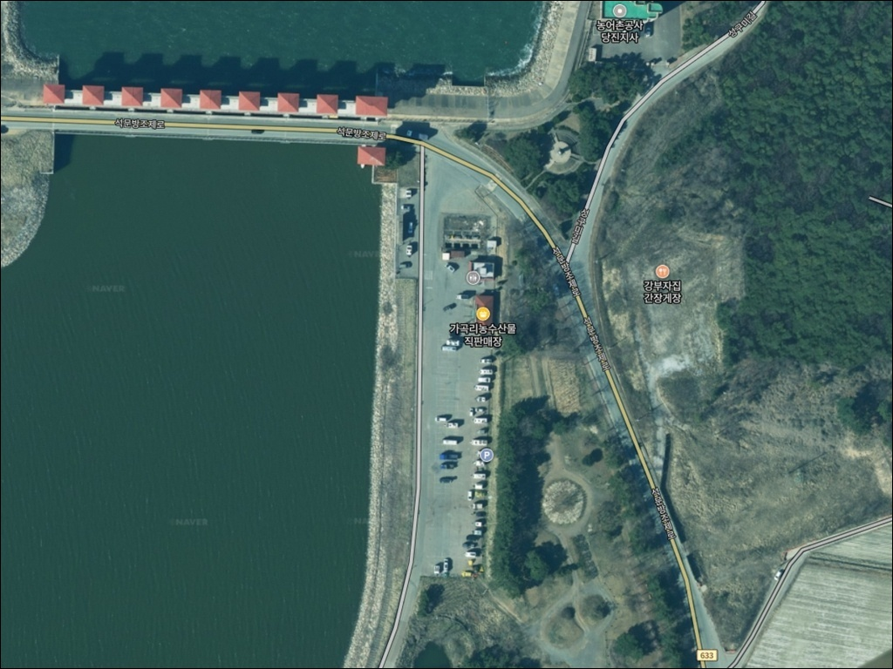
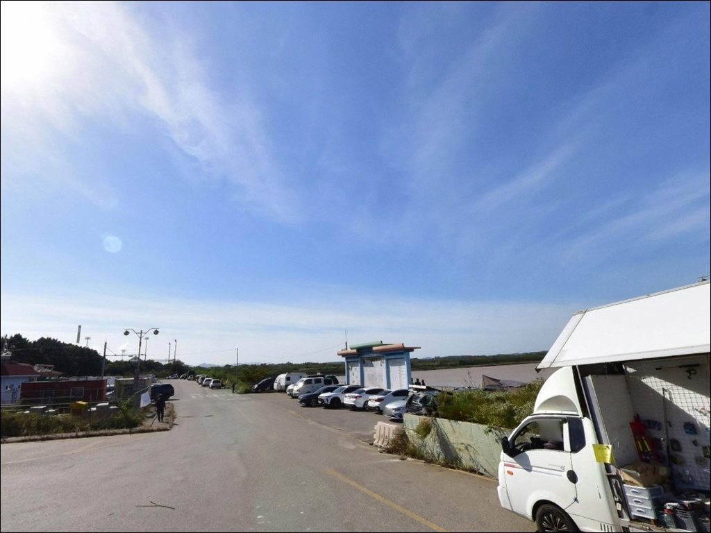
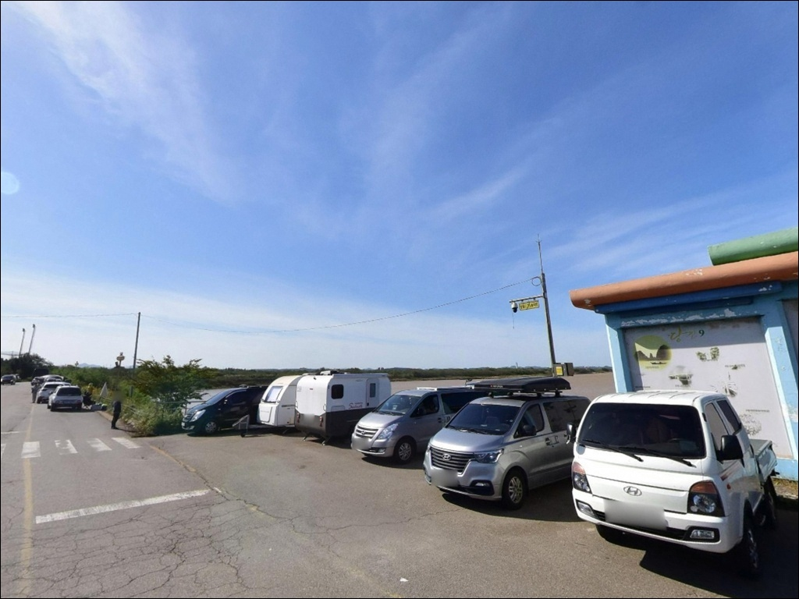
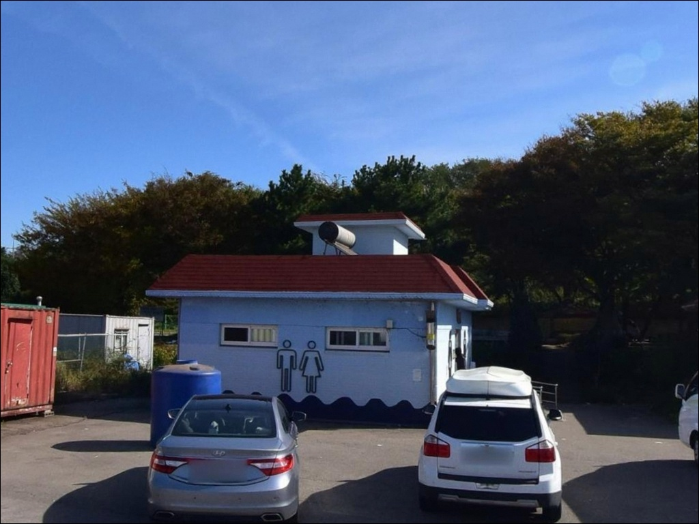
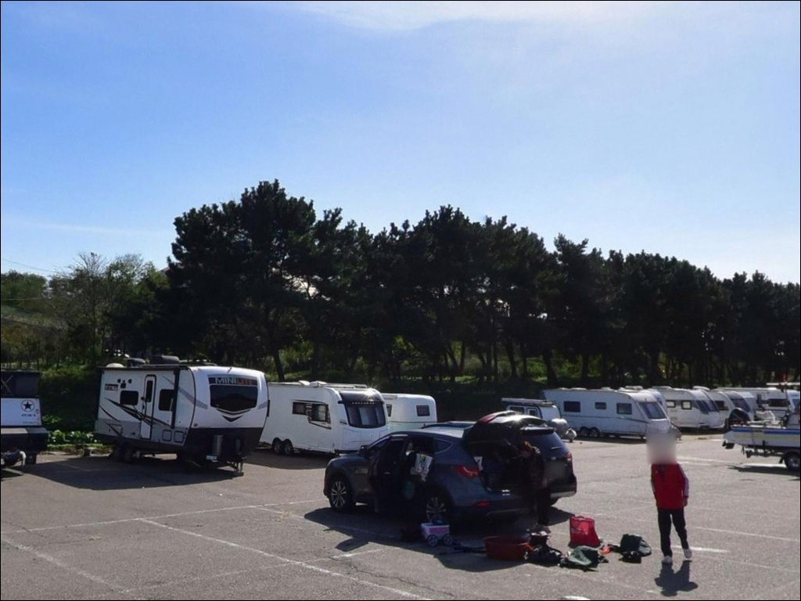
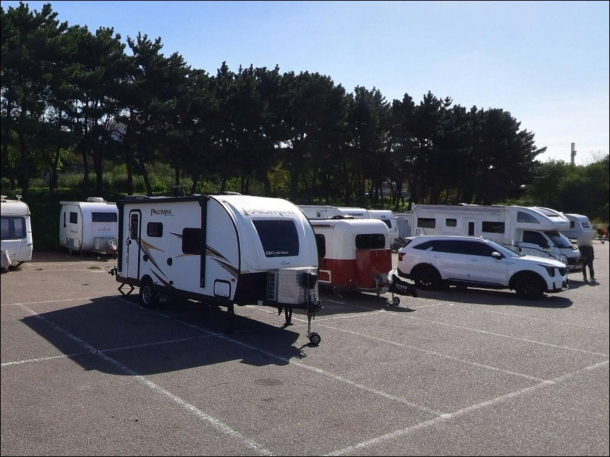
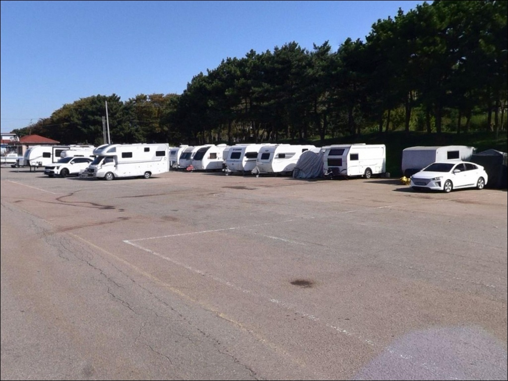
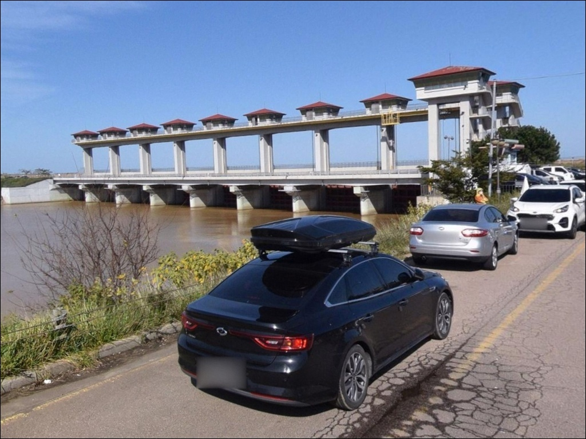
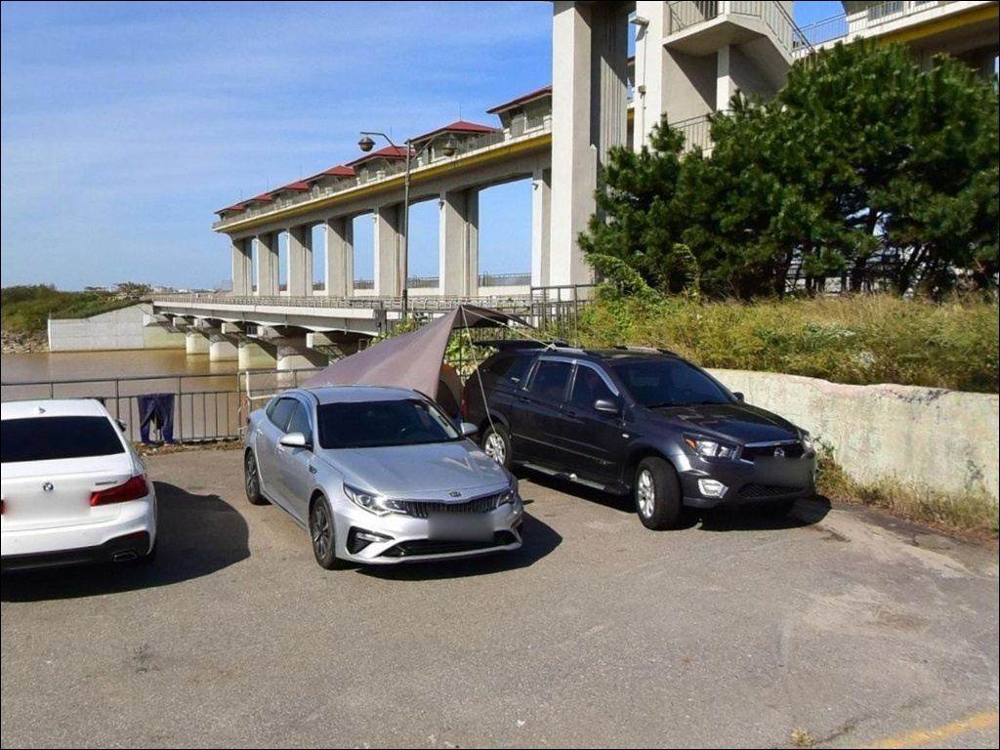

석문방조제 주차장, 충남 당진시 자연 그대로의 분위기에서 차박, 낚시를 즐기기 좋은 포인트
이 페이지에는 광고(제휴 링크 포함)가 있으며, 광고 링크를 통해 구매하면 운영자가 판매 수익 또는 수수료를 받을 수 있습니다. 포인트 사진: 카카오맵 스카이뷰·로드뷰. 이 페이지의 지도·사진 이미지는 카카오맵의 실제 서비스 이미지와 다를 수 있습니다.


포인트 안내
석문방조제 주차장
충남 당진시 송산면 가곡리 538
석문방조제에서 가장 자주 하는 판단 실수는
물때를 확인하지 않고 출발하는 것입니다.
사리 전후 간조 때는 석축 앞이 갯벌로 드러나
수심이 거의 사라지며,
만조 전후 2시간 남짓을 벗어나면
낚시 자체가 불가능해지는 구조입니다.
10km 넘는 긴 방조제지만
유효 낚시 시간은 조건에 따라 생각보다 짧습니다.
이 글은 석문방조제의 석축 지형 구조,
물때 판단 기준, 구간별 낚시 여건에 집중합니다.
조황 단정이나 특정 어종 보장은
이 글의 범위에 포함되지 않습니다.

1. 방조제 진입 동선과 주차 여건
가곡리 538 기준으로 방조제 진입부까지 이어지는 도로는
왕복 2차선 구조로 확인됩니다.
대형 캠핑카나 카라반도 진입과 회차가 비교적 수월한 편이며,
특별히 험한 구간이나 비포장 구간은
파악되지 않습니다.
방조제 주차 후보는 크게 세 구간으로 나뉩니다.
방조제 초입부 도로변 공터,
방조제 중간의 소형 공간,
석문호 준공기념탑 인근 넓은 주차장이
낚시인들이 자주 활용하는 지점입니다.
내비에 "석문방조제로 1755"를 입력하면
방조제 전 구간에서 규모가 가장 크고
이동 동선이 안정적인 주차장에 닿습니다.
주말 피크 시간대에는
일찍 자리를 잡지 않으면
주차 자체가 어려워질 수 있습니다.
주차 후 석축까지 짐을 들고 이동해야 하는 경우도 있으므로,
주차 위치와 포인트 간 이동 동선을
미리 가늠해두는 것이 좋습니다.

2. 방조제 주차장 차박 환경과 야간 체류 여건
석문방조제 주차장을 차박으로 활용하는 사례는
꽤 알려진 편입니다.
방조제 구조상 주변 민가 밀집도가 낮고
야간 차량 통행이 잦지 않아
프라이버시는 그런대로 유지되는 환경입니다.
다만 탁 트인 외해 방향 구조 특성상
바람 노출이 강한 편입니다.
북서풍이 부는 시기에는
방조제 위나 석축 쪽 바람이 상당히 세질 수 있어
방풍 준비와 텐트·타프 설치 여부 판단이
차박 시작 전 기본 확인 항목입니다.
야간에는 방조제 도로를 오가는 차량 불빛과
드문드문 배치된 가로등으로
완전한 암흑은 아닌 편입니다.
그러나 석축으로 내려가는 구간은
시야가 극히 제한되므로,
야간에 낚시를 마친 뒤에는
차 안에서 머무는 방식이 현실적이고 안전합니다.


3. 주변 편의시설 현황
가곡리 농수산물 직판장이
방조제 초입 진입 기준점으로 자주 언급됩니다.
방조제 인근과 성구미 선착장 방향으로
편의점이 여러 곳 위치하며,
반경 3km 이내에서 기본 생활 인프라 이용이
가능한 편입니다.
낚시점도 방조제 진입로 초입과
인근 도로변에 여럿 운영 중인 것으로 파악됩니다.
현장에서 여분 채비를 보충해야 할 경우
이 동선을 활용할 수 있습니다.
반경 10km 이내에는 당진 시내가 포함되어
장거리 보급도 가능한 권역입니다.
화장실을 포함한 공식 시설 운영 현황은
현장 방문 전 직접 확인하는 것이 좋습니다.
출조 전 식수·얼음·채비 소품은
출발 전 완비하는 것이 기본입니다.

4. 출발 전 반드시 챙겨야 할 준비사항
이 포인트에서 가장 먼저 해야 할 준비는
물때 확인입니다.
바다타임에서 석문방조제 기준 물때를 확인하고,
사리인지 조금인지를 먼저 파악한 뒤
만조 전후 2시간을 기점으로
입장 시각을 잡아야 합니다.
물때 없이 현장에 도착하면
석축 앞 갯벌만 보고 돌아오는 상황이 됩니다.
석축 표면은 물이 빠진 뒤에도 미끄럽습니다.
이끼와 해조류가 붙어 있는 돌 표면은
생각보다 훨씬 미끄러우며,
미끄럼 방지 신발(펠트화 등) 착용은
낙상 예방을 위한 기본 조건입니다.
구명조끼는 낚시 내내 착용 상태를 유지하고,
야간 단독 석축 진입은 자제하는 것이 안전합니다.
밑걸림으로 인한 채비 손실이 잦은 포인트입니다.
루어 채비든 원투 채비든
여분을 충분히 준비하지 않으면
현장에서 조기 철수하는 상황이 됩니다.
강풍 예보가 있을 때는 외해 노출이 강해
낚시 자체가 어려워지므로,
출발 전 기상청 풍향·파고 예보도
반드시 함께 확인해야 합니다.

5. 석축 구조로 읽는 석문방조제 낚시 여건
석문방조제는 송산면 가곡리에서
석문면 장고항리까지 약 10.6km를 이어가는
직선형 방조제입니다.
방조제 위 왕복 2차선 도로를 기준으로
한쪽은 서해 외측 바다,
반대쪽은 간척으로 조성된 석문호입니다.
낚시 주 포인트는 외항(서해) 쪽 석축 구간입니다.
외항 석축은 번호가 매겨진 구간으로 나뉘어져 있으며,
구간마다 접근 발판과 수심 패턴이 조금씩 다릅니다.
방조제 중간 수문 근처와 20번대 이상 구간이
자주 언급되는 편이나,
구간별 최신 포인트 정보는
현장 낚시인이나 인근 낚시점에서
직접 확인하는 것이 가장 정확합니다.
출조 전 최신 조황을 반드시 검색해 보시기 바랍니다.
조수간만의 차란 만조와 간조 때의
수위 높이 차이를 뜻하며,
서해안은 이 차이가 큰 편이라
물때에 따라 석축 진입 가능 구간 자체가 달라집니다.
바닥은 잔돌과 암초가 섞인 구조로
밑걸림이 심한 편이며,
수중 여가 발달한 석축 기저부는
우럭 같은 암초성 어종이 숨기 좋은 조건이기도 합니다.
석문방조제 외항 석축은 물때에 따라
낚시 가능 구간과 수심이 크게 달라지는 포인트입니다.


6. 석문방조제에서 어울리는 낚시 방식
루어낚시가 이 포인트에서 가장 활발하게 이루어지는 방식입니다.
수중 여가 발달한 석축 기저부는
광어·우럭이 서식하기 좋은 지형 조건이며,
만조 전후 수심이 확보될 때
지그헤드·웜 조합이나 프리리그 채비로
외항 방향 바닥층을 집중적으로 건드리는 운용이
이 포인트에 잘 맞습니다.
밑걸림은 각오해야 하므로 채비 여분이 필수입니다.
원투낚시도 이 포인트 구조에 어울립니다.
원투낚시란 무게가 있는 봉돌을 달아
멀리 캐스팅해 바닥 어종을 노리는 방식으로,
방조제 낚시에서 가장 보편적으로 활용됩니다.
석축 위에서 외해 방향으로 채비를 멀리 보내
망둥어·붕장어·숭어 등을 노릴 수 있으며,
간조가 가까워지는 시간대에는
원투로 멀리 보내 수심이 남아 있는 구간을
탐색하는 방식이 현실적입니다.
9월 이후에는 삼치 루어 조황이 언급되는 포인트이기도 합니다.
회유 시기에는 메탈 지그를 이용한
장거리 캐스팅 방식이 주를 이루며,
조류 흐름이 좋은 방조제 끝단 방향 구간이
유리한 편입니다.
릴찌낚시도 석축 수심 변화 구간에서
부유층 어종을 노리는 방식으로 활용해 볼 수 있습니다.
사리 전후 만조 타이밍을 놓치면
어떤 채비를 써도 수심이 확보되지 않는 것이
이 포인트의 핵심 제약입니다.

7. 대안 포인트와 플랜 B 동선
석문방조제가 기대에 못 미치거나
주차 자리가 이미 찼을 때
가장 먼저 이동할 수 있는 대안은
성구미방파제입니다.
석문방조제 초입 바로 앞에 위치해
이동 거리가 짧으며,
방파제형 발판에서 낚시가 가능해
기상이 다소 좋지 않을 때도
상대적으로 안정적인 낚시 여건이 갖춰지는 편입니다.
장고항 방파제는 방조제 서쪽 방향에 위치한 국가어항입니다.
방파제 330m 규모로 발판이 양호하고
주차 여건도 갖춰져 있습니다.
수산시장과 편의시설이 더 밀집되어 있어,
석문방조제에서 이동이 필요할 때
낚시와 보급을 동시에 해결할 수 있는 동선입니다.
물때 좋고 날씨 좋은 주말에
석문방조제 자리가 없을 경우
장고항으로 이동하는 방식이 효율적입니다.
왜목마을은 장고항에서 북쪽으로 더 이동한 곳에 있습니다.
서해 일출·일몰 명소로 알려진 해안가로,
낚시 포인트보다는
차박 여정에서 분위기 있는 경유지로
활용하기 좋습니다.

물때와 채비, 두 가지 갖추고 가면
석문방조제가 달라 보입니다
광어·우럭 루어낚시를 즐기는 낚시인이라면
석문방조제 석축 지형은 잘 맞는 구조입니다.
수중 여가 발달한 석축 기저부와
방조제 끝단 방향 조류 흐름은
루어 운용 폭이 넓고,
시즌에 따라 삼치·원투낚시까지
복수 방식을 한 포인트에서 구사할 수 있습니다.
반면 물때를 무시하고 찾거나
미끄럼 대비 없이 석축에 내려서면
어려운 상황을 맞게 됩니다.
물때 확인, 미끄럼 방지 신발, 채비 여분,
이 세 가지를 갖추고 간다면
수도권에서 접근이 편한 서해 석축 포인트 중
기억에 남는 출조가 될 수 있는 곳입니다.
방조제 주차장을 활용한 차박을 계획한다면
바람 방향과 세기를 먼저 확인하는 것이 우선입니다.
만조 전후 낚시를 마치고
주차장에서 조용히 하룻밤 머무는 형태라면,
물때가 좋은 날 낚시와 차박을 함께 엮는
출조로 활용하기에
나쁘지 않은 포인트입니다.